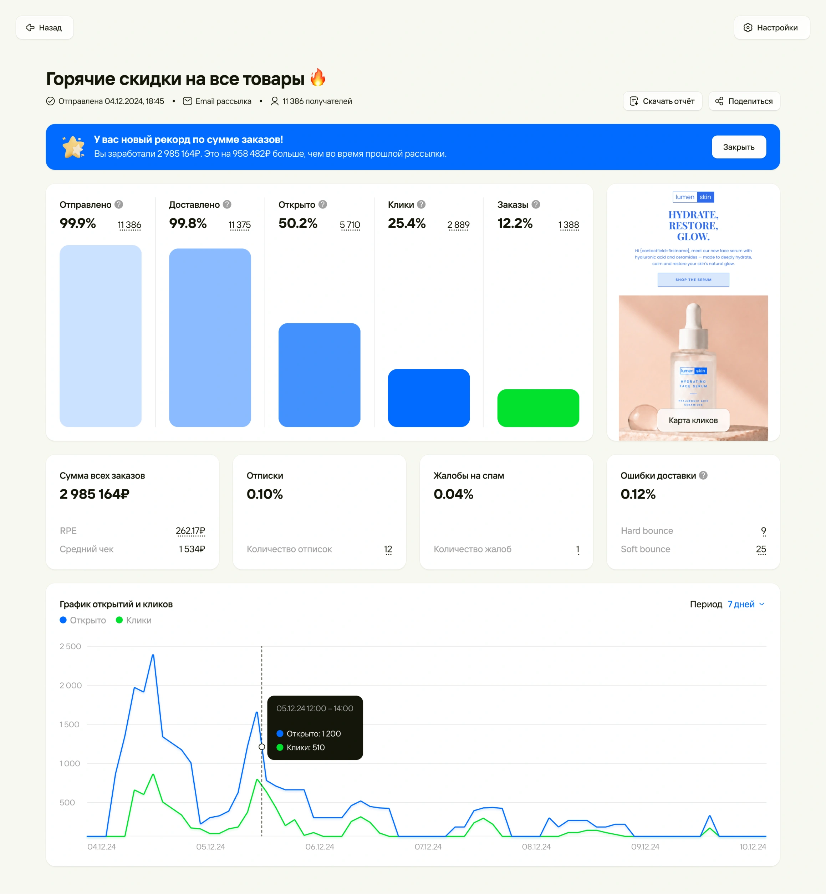
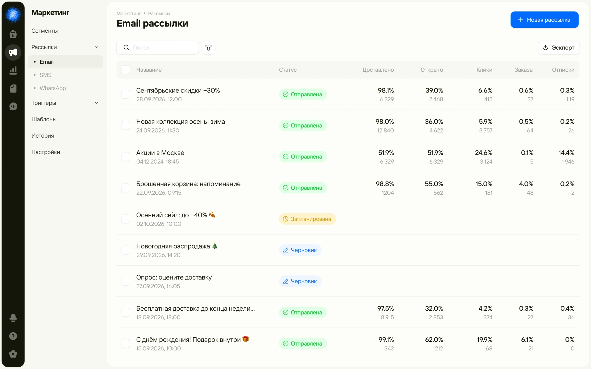
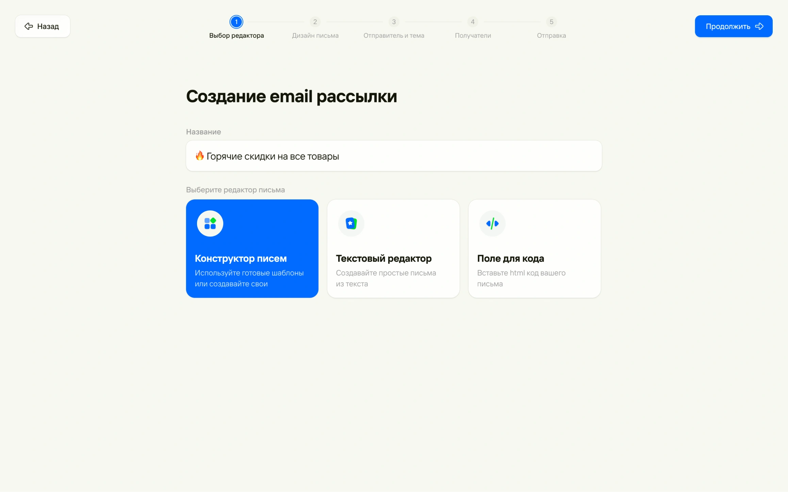
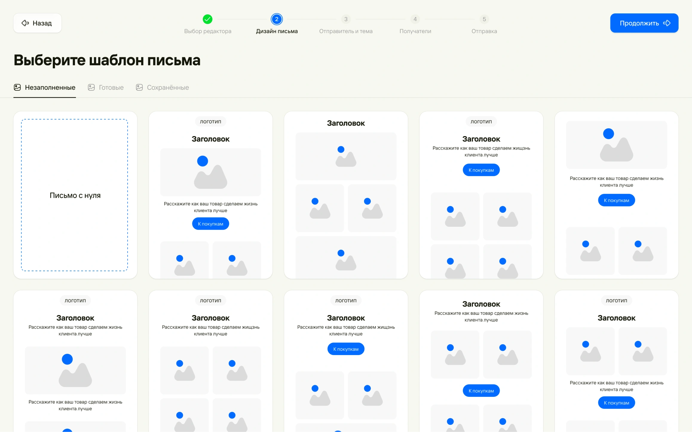
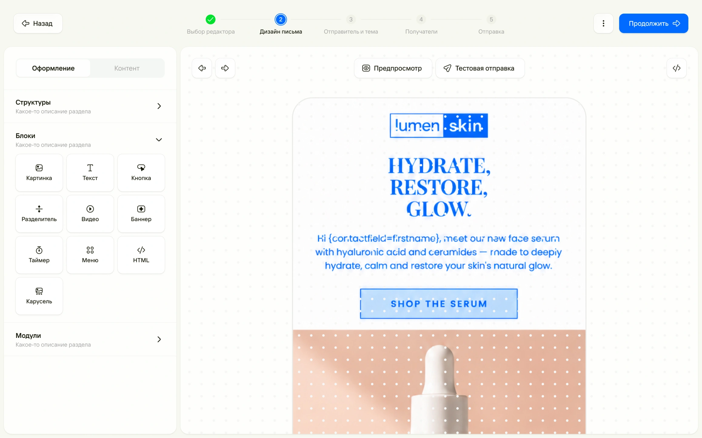
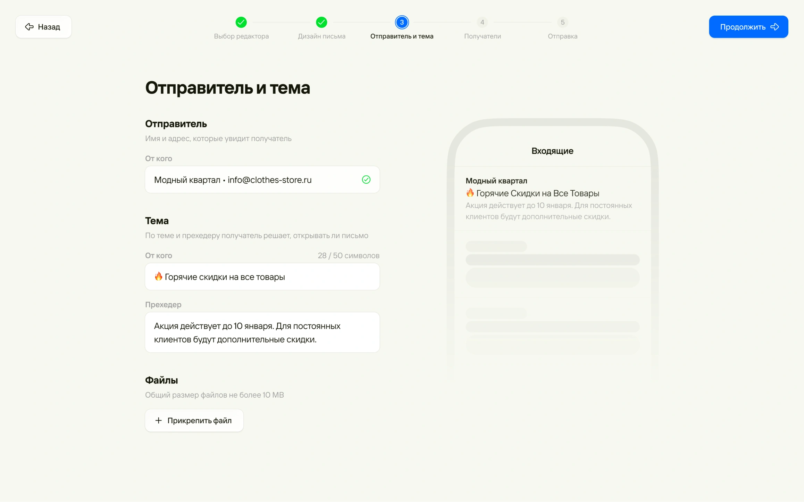
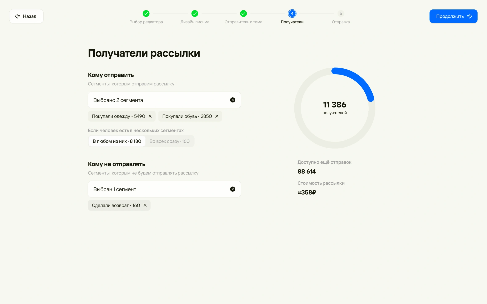
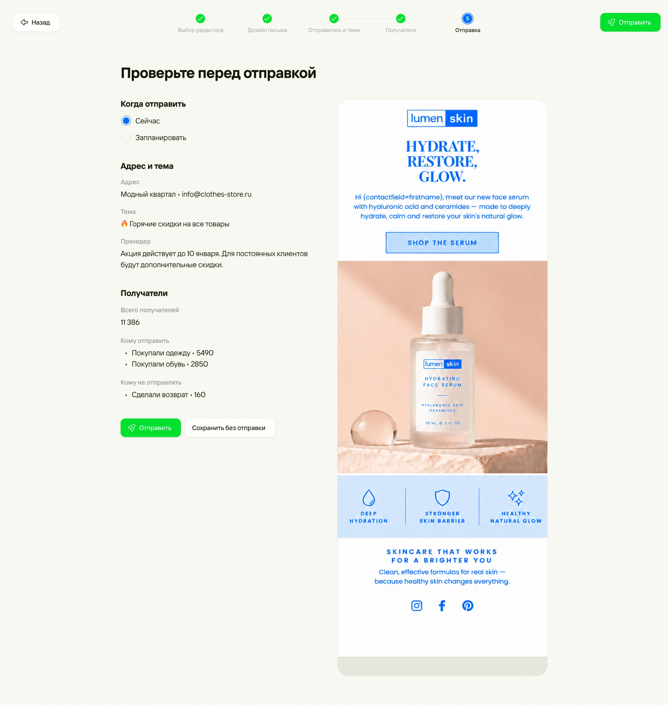

Редизайн сервиса email-рассылок → Остановил падение и вернул рост MAU

Проблема
Отрицательный MAU у сервиса Email рассылок. Устаревший интерфейс без базовых фичей.
Задача
Сделать рассылки удобными для маркетолога и вернуть рост MAU
Что важно для бизнеса
- Снизить отток и вернуть рост MAU
- Привлечь новых пользователей
- Догнать рынок по функциям
- Развивать маркетинг внутри CRM: это напрямую влияет на выручку
Что важно для пользователя
Для маркетолога, который занимается рассылкой, важен контроль и предсказуемость: нужно быстро собрать письмо без поломок в вёрстке, точно выбрать получателей, не попасть в спам и понимать, что происходит после отправки: какой open rate и click rate, как рассылка повлияла на заказы.
Процесс
- Разбор исследования
- Бенчмаркинг
- Брейншторм
- Проектирование
- Ю-тест
- Правки
Моя роль
Дизайн от сценариев до финальных макетов на основе данных продакта.
Решение 1
Ключевые метрики прямо в списке
Аргументы
- Рассылки можно сравнить, не открывая каждую
- Статус сразу показывает, что отправлено, что в черновике, а что с ошибкой

Решение 2
Настройка разбита на шаги. Есть три варианта как сделать письмо
Аргументы
- Пользователь фокусируется на одном действии, поэтому ошибок меньше.
- Конструктор подходит новичкам, текстовый редактор нужен для простых писем, а HTML-поле для тех, у кого своя вёрстка.

Решение 3
Шаблоны и блочный конструктор
Аргументы
- Письмо собирается из готовых блоков, поэтому вёрстка не ломается.
- Предпросмотр и тестовая отправка доступны до запуска.


Решение 4
Превью письма во входящих
Аргументы
- Маркетолог видит, как тема и прехедер выглядят у получателя, ещё до отправки.

Решение 6
Сегменты с подсчётом аудитории
Аргументы
- Сразу видно, сколько людей получит письмо.
- Исключения отсекают лишних, поэтому меньше жалоб и спама.

Решение 7
Финальная проверка на одном экране
Аргументы
- Все настройки и письмо собраны вместе, это последний шанс поймать ошибку.
- Отправку можно запланировать.

Решение 8
Отчёт в виде воронки
Аргументы
- Воронка идёт от доставки до заказов, и видно, как рассылка повлияла на выручку.
- Ошибки доставки и жалобы вынесены отдельно.
Результат
Вместе с командой вырастили метрики AOV, MAU, снизили отток и создали возможность дальше расширять маркетинг внутри CRM, через добавление новых видов рассылок (SMS, WhatsApp).
Раннее MAU был с отрицательной динамикой. После редизайна мы измеряли этот показатель в течение полугода – прирост составил 1.5-2% каждый месяц.
Для пользователей появилась возможность проводить маркетинговые кампании прямо внутри CRM и сразу видеть как это повлияло на заказы.